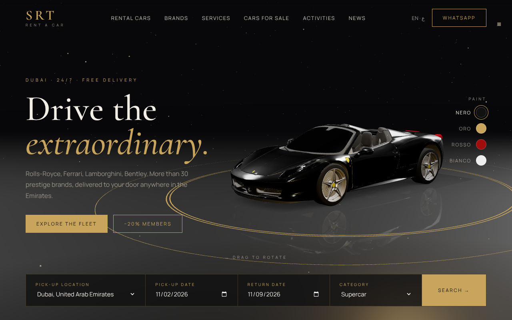
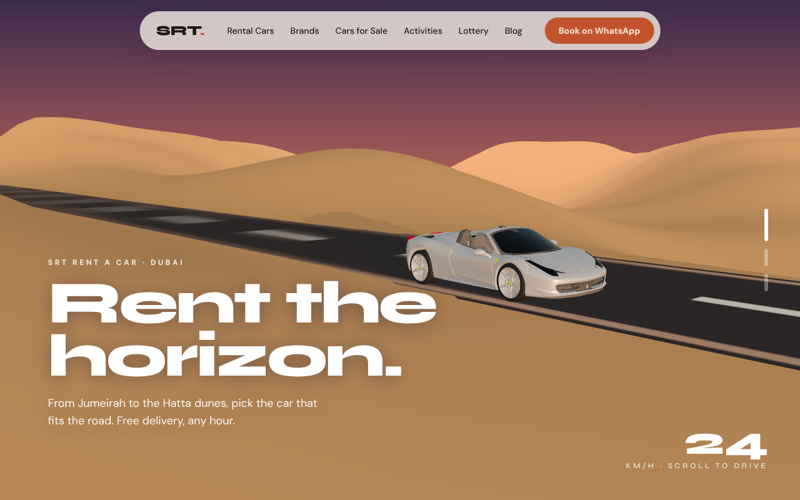
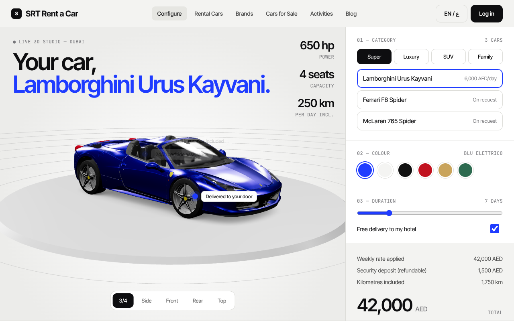
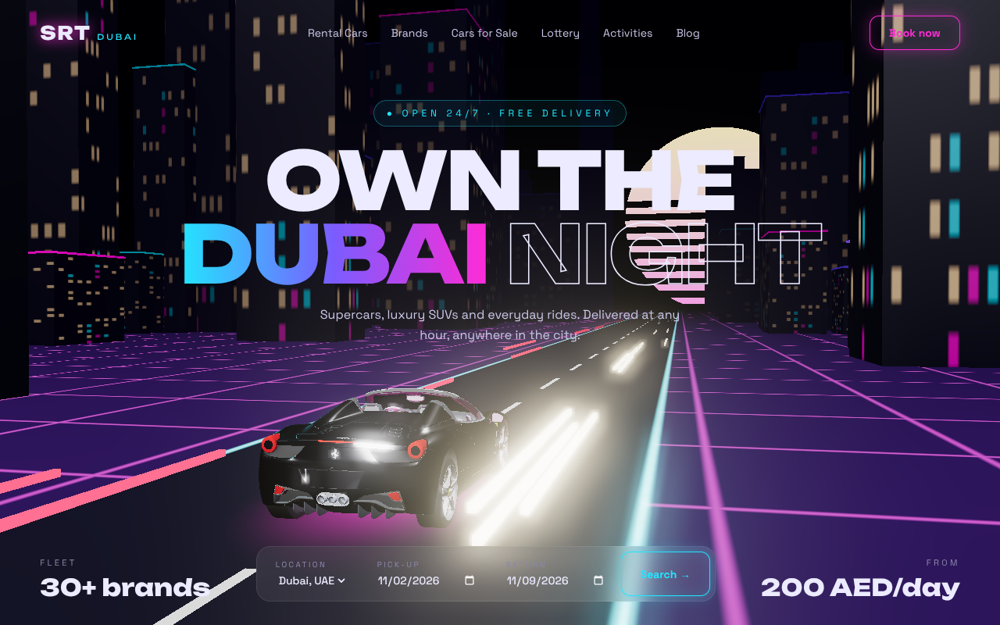
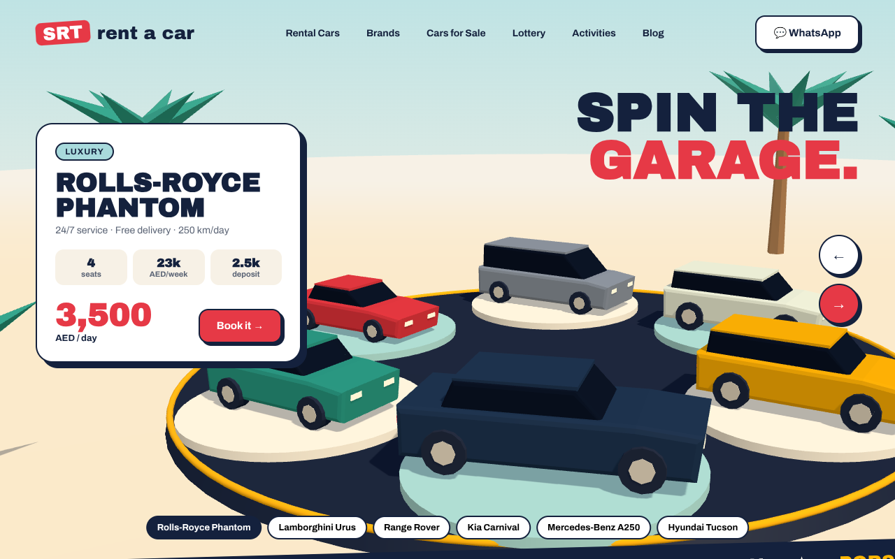

Cinq directions pour la page d'accueil de srt-car.com, chacune avec une scène 3D en temps réel (Three.js). Les contenus (tarifs, services, contacts, articles) viennent du site actuel.

Showroom de luxe : sol miroir, anneaux dorés, voiture en rotation et choix de la peinture en direct.
Cormorant + Manrope · orbite 3D · teinte de carrosserie
Récit au scroll : la voiture traverse des dunes infinies au coucher du soleil, avec une caméra qui change de plan à chaque chapitre.
Syne + DM Sans · terrain procédural · caméra au scroll
Configurateur de location : catégorie, modèle, couleur et durée, avec le prix calculé en direct et des vues caméra prédéfinies.
Inter Tight · hotspots 3D · calcul de prix
Dubaï la nuit en synthwave : ville néon générée, tour façon Burj, grille animée, bloom et parallaxe à la souris.
Unbounded · post-processing bloom · tirage au sort
Plateau tournant low-poly façon jouet : six voitures modélisées en code, à faire défiler par glisser, flèches ou clic.
Archivo Black · voitures procédurales · style néo-brutaliste